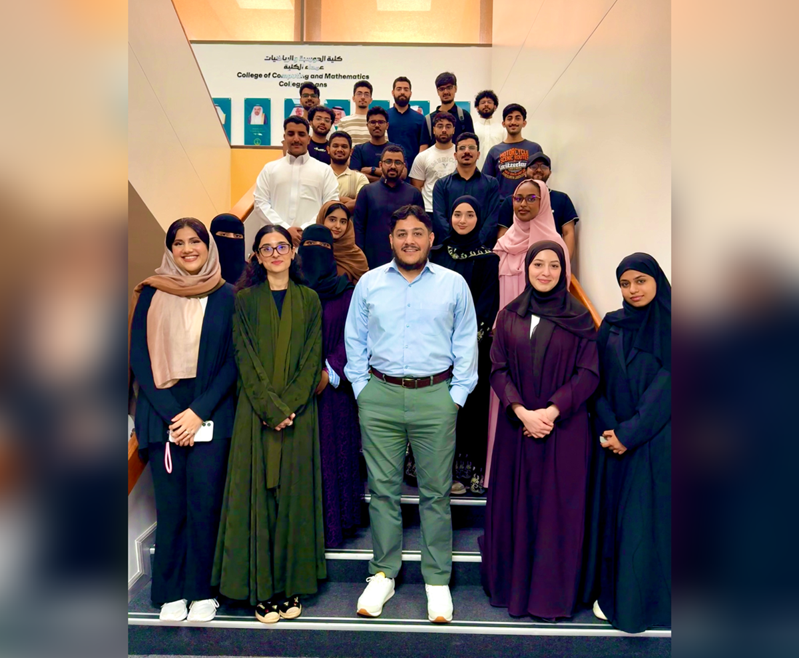
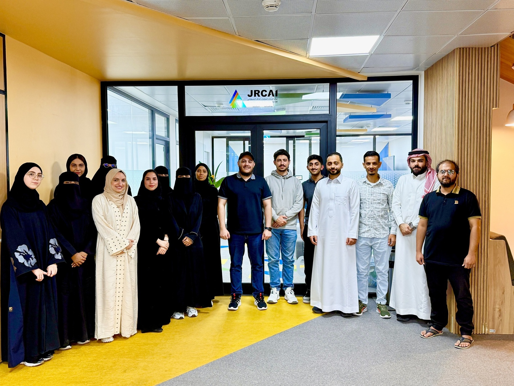
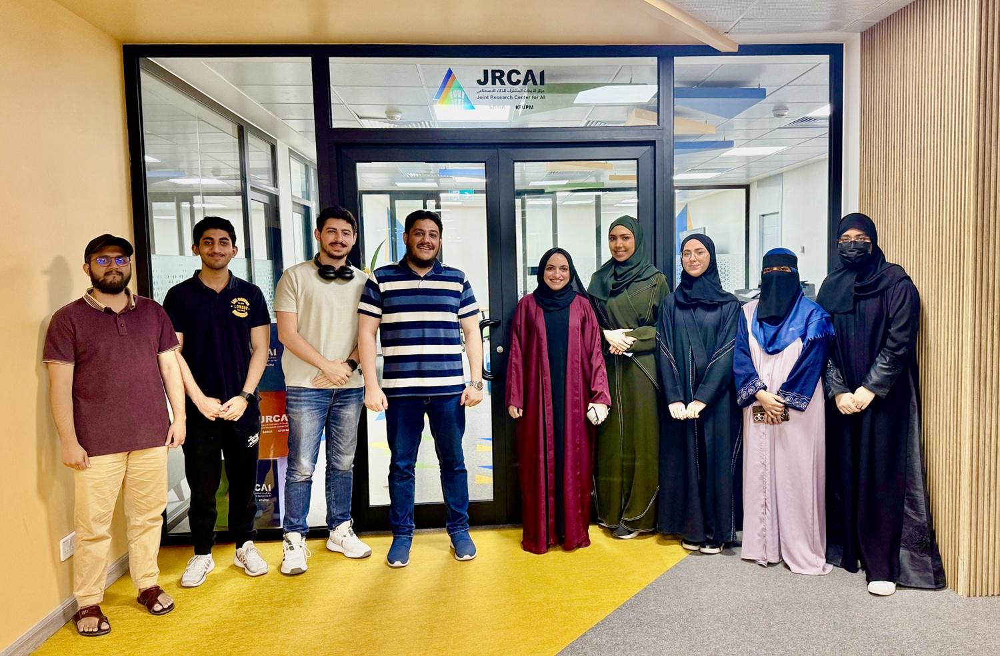

01→
Anything AI
Intelligent systems, reasoning, optimization and trustworthy AI across every layer of the stack.




We build intelligent machines to perceive, reason and act on multimodal information from the world for real-world impact in healthcare, autonomous systems, affective computing and human-computer interaction.

Intelligent systems, reasoning, optimization and trustworthy AI across every layer of the stack.
Self-supervised, contrastive, metric and multimodal representation learning.
Detection, segmentation, scene understanding, 3D vision and video analytics.
Learning and reasoning across vision, language, audio, sensor and biomedical data.
Foundation models for language, vision, multimodal reasoning, retrieval and generation.
Diffusion models, GANs, large generative models and synthetic data generation.
Healthcare, robotics, autonomous systems, smart cities, industrial inspection and surveillance.
Autonomous agents, planning, reasoning, tool use and multi-agent collaboration.
Facial expression analysis, emotion recognition, gesture understanding and behavioral AI.
Human-AI collaboration, intelligent interfaces and user-centered systems.
Medical image analysis, clinical decision support, biomedical AI and healthcare automation.
Interpretability, fairness, robustness, uncertainty estimation and responsible AI.
Paper accepted in the Neural Networks Journal.
Syeda Aishah Asim, Rawan Aldhafiri, Zaki Al-Turki, Akram Khan, Asad Ejaz, Taha Alsadah, Mohammed Aldosari and Abdulnafe Asueid joined as graduate project researchers.
Dr. Muzammil participated as an AI Advisor/Mentor in the Eye Hackathon 2026 organised by KKESH.
2 papers accepted in SPIE Medical Imaging Conference 2027.
Dr. Muzammil is now an AI Mentor/Technical Committee Member of the AAAI Undergraduate Consortium 2027.
Dr. Muzammil is now as an AI Mentor in the KFUPM-Tsinghua Hackathon 2026.
Dr. Muzammil participated as an AI Advisor/Mentor in the Farq Hackathon 2026 organised by AlYamamah University.
Sara Alangari, Ayman Mohammed, Danah Alalwan, Mohammad Hammad, Taha Noman, Wed Alghamdi, Husain Althagafi, Baraa Zino, Ali Lutfallah, Mahad Adil, and Talha Mera joined as undergraduate researchers.
Dr. Muzammil gave a talk on (and is leading the) Multimodal AgenticAI for Healthcare at the AgenticAI at KFUPM initiative.
Paper accepted in the Information Fusion Journal.
Danah Aldosary joined as undergraduate thesis researcher.
Dr. Muzammil is now an AI Mentor for IEEE Signal Processing Mentorship Academy.
Paper accepted in the IEEE Access Journal.
Paper accepted in the ACCV Conference 2027.
Dr. Muzammil's funded project on Spiking Neural Network for Intelligent Sensing (PI) is approved.
Paper accepted in the IEEE Journal of Biomedical and Health Informatics Journal.
Dr. Muzammil is now an AI Mentor for IEEE Micro Mentoring Experience Program at ICIP 2026.
Paper accepted at the IEEE International Conference on Image Processing (ICIP) 2026.
Paper accepted in BMVC 2026.
Asmaa Waheeba and Talah Jabril joined as visiting undergraduate researchers.
Dr. Muzammil's funded project on Quantum Multimodal AI (Co-PI) is approved.
Dr. Muzammil's funded project on Multimodal and Trustworthy Medical Computer Vision (PI) is approved.
Alaa successfully defended her MS thesis.
Reem successfully defended her PhD thesis proposal.
Our team won 1st and 2nd places in the graduate category and 2nd place in the undergraduate category of the poster competition at Women in Data Science (WiDS 2026).
6 posters accepted in the Women in Data Science (WiDS) 2026 poster competition at KFUPM, Saudi Arabia.
Malik Ibrahim, Daniya Imran, Hibah Almashhad, Jumana Alharbi, Abdulaziz Ismail, Abdullah AlAwlaqi and Saad Alghamdi successfully completed their graduate projects.
Dr. Muzammil participated in the IEEE International Symposium on Biomedical Imaging (ISBI) in London, UK.
Three papers accepted at the IEEE International Symposium on Biomedical Imaging (ISBI).
"UDAN-CLIP: Diffusion attention network with contrastive language-image joint learning for underwater image enhancement" accepted in Pattern Recognition.
"KRCapVLM: Beam-guided knowledge replay for knowledge-rich image captioning using vision-language model" accepted in Pattern Recognition.
"MultiviewVLM: Unsupervised Multiview Contrastive Language-Image Joint Learning with Pseudo-Labeled Prompts via Vision-Language Model for 3D/4D Facial Expression Recognition" accepted in IEEE Transactions on Multimedia.
Dr. Muzammil is serving as Area Chair for the 28th International Conference on Pattern Recognition (ICPR) 2026.
Dr. Muzammil will give a keynote talk at the Foundation AI Models in Medical Imaging Workshop at ISBI 2026.
Dr. Muzammil elevated to the grade of IEEE Senior Member.
Best Poster Award for "Generative Adversarial Synthesis for Brain MRI Images" at the SMiLE 2026 conference.
Afrah successfully defended her MS thesis.
Dr. Muzammil participated as a Mentor at MenaML 2026, KAUST, Saudi Arabia.
Renad Elsafi, Danah Aldosary, Omar Alshahrani, Abdullah Baleid, Arwa Aldawoud, Leen Refka, Bana Jaber and Abdulrahman Ibrahim joined as undergraduate researchers.
Dr. Muzammil participated as AI Advisor and Mentor at the Eye Hackathon 2025 in Riyadh, Saudi Arabia.
"MOSAIC: A multi-view 2.5D organ slice selector with cross-attentional reasoning for anatomically-aware CT localization in medical organ segmentation" accepted in Computer Vision and Image Understanding.
Malik Ibrahim, Daniya Imran, Hibah Almashhad, Jumana Alharbi, Abdulaziz Ismail, Abdullah AlAwlaqi and Saad Alghamdi joined as graduate researchers.
Dr. Muzammil gave a keynote talk at the Heart Fusion Conference 2025.
Dr. Muzammil gave a talk titled "Vision-Language Models in the Age of Multimodal Healthcare AI: Opportunities and Challenges for Next-Generation Medical Imaging and Clinical Applications" at the AI Leadership Development Day, hosted by Johns Hopkins Aramco Healthcare (JHAH) and sponsored by Aramco.
Dr. Muzammil gave a talk titled "Vision-Language Models in the Age of Multimodal AI: Bridging Modalities for Next-Generation Computer Vision Applications" at the AI Co-Innovation Program, jointly organized by Aramco and the Research, Development and Innovation Authority (RDIA).
Farah Alshiha joined as an undergraduate researcher on medical AI.
"FACET-VLM: Facial emotion learning with text-guided multiview fusion via vision-language model for 3D/4D facial expression recognition" accepted in Neurocomputing.
"SMILE-VLM: Self-Supervised Multi-View Representation Learning using Vision-Language Model for 3D/4D Facial Expression Recognition" accepted in IEEE Access.
"Prompt-Guided Patch UNet-VAE with Adversarial Supervision for Adrenal Gland Segmentation in Computed Tomography Medical Images" accepted at the International Conference on Artificial Intelligence in Healthcare (AIiH 2025).
Reem AlJunaid joined as a PhD researcher on knowledge distillation for medical AI.
Our team won 2nd place in the poster competition at the Women in Data Science (WiDS 2025) conference.
Safa joined as a PhD researcher on generative AI for medical 3D data.
Hania was admitted to the PhD program at KFUPM, Saudi Arabia.
Thuraya was admitted to the MS program at KFUPM, Saudi Arabia.
Poster accepted in the Women in Data Science (WiDS) 2025 poster competition at KFUPM, Saudi Arabia.
Paper accepted at the 19th IEEE International Conference on Automatic Face and Gesture Recognition (FG 2025), Florida, USA.
Two posters accepted at the 16th Student Research Conference on Applied Computing 2025, Abu Dhabi, UAE.
Dr. Muzammil's funded project on AI models for multimodal differentiation of ocular neoplasia (PI) is approved.
Dr. Muzammil participated in the LEAP Conference in Riyadh, Saudi Arabia.
Hania Ghouse joined as a visiting researcher on multi-organ segmentation and medical analysis.
Dr. Muzammil's funded project on vision-language models for emotion recognition (PI) is approved.
Almaan Khan joined as an undergraduate researcher on tackling data imbalance in rare object detection.
Thuraya Alzubaidi joined as a visiting researcher on explainability of vision-language models.
Abdul Razaq joined as an undergraduate researcher on transformer models for underwater image enhancement.
Sana Ammar joined as an undergraduate researcher on explainability for medical image segmentation.
Dr. Muzammil gave a seminar on emotion recognition from 3D/4D faces at KFUPM, Saudi Arabia.
Poster accepted in the AITS poster competition at KFUPM, Saudi Arabia.
Poster accepted in the JRCAI poster competition at KFUPM, Saudi Arabia.
Alaa Dalaq joined as an MS researcher on vision-language models for referring semantic segmentation.
Dr. Muzammil participated in the International Conference on Smart Mobility and Logistics Ecosystem (SMiLE) at KFUPM, Saudi Arabia.
Dr. Muzammil participated in the Global AI Summit (GAIN) in Riyadh, Saudi Arabia.
Afrah Shaahid joined as an MS researcher on underwater visual enhancement using VLMs.
Dr. Muzammil affiliated as a Research Fellow with the SDAIA-KFUPM Joint Research Center for AI (JRC-AI), Saudi Arabia.
Dr. Muzammil officially appointed as a Mentor for KFUPM students, Saudi Arabia.
We strongly encourage collaboration with industrial and academic partners, and we are actively looking for motivated researchers to join the team.